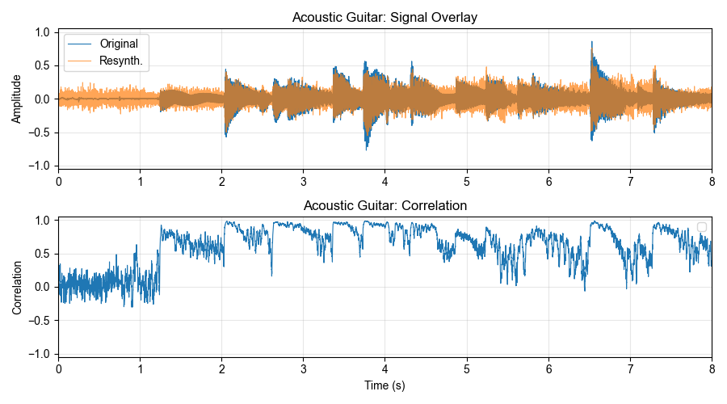
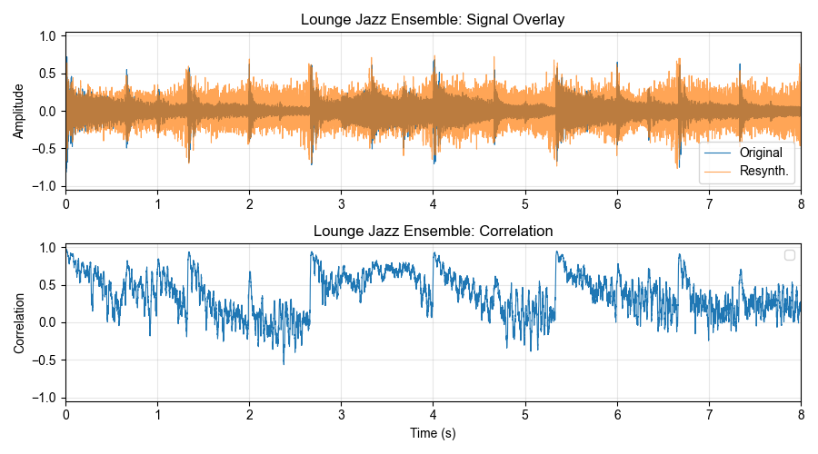
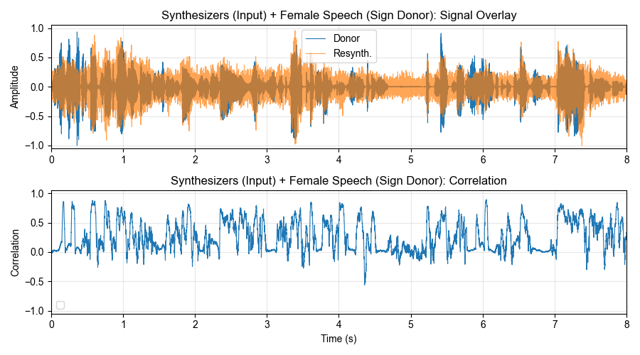
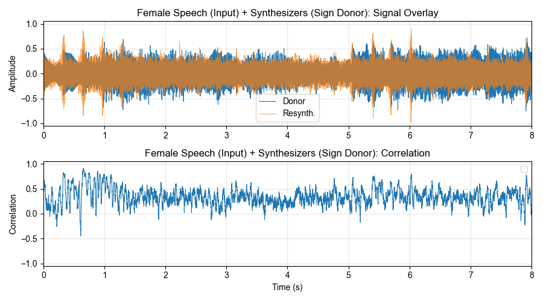
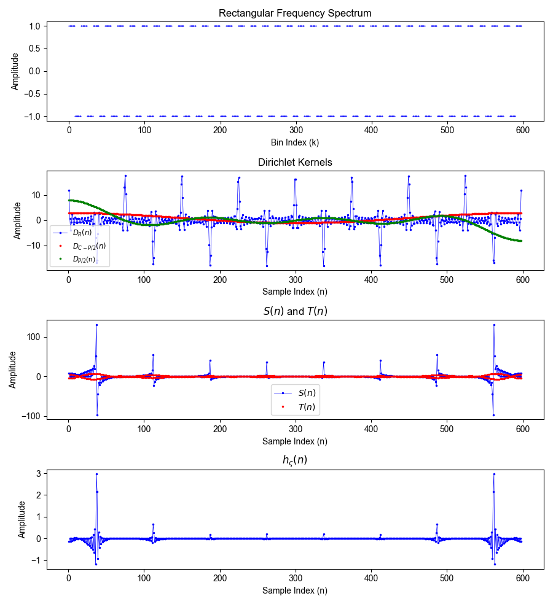
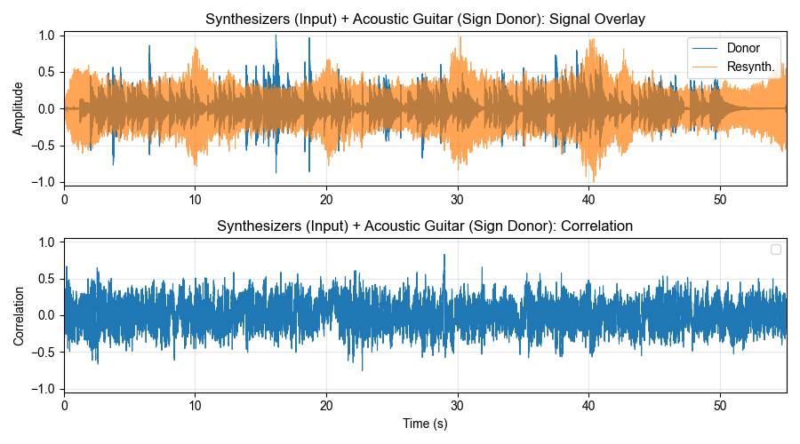

Experiments With Giant FFTs
The paper Zero-Phase Sound via Giant FFT by Välimäki, Salmi, Bilbao, Schlecht, and Zicarelli, presented at the International Conference on Digital Audio Effects 2025 (DAFx25), proposes a conceptionally simple but sonically interesting idea: Applying the Fourier transform to a long audio signal, erasing the spectrum's phase component, and finally taking the inverse Fourier transform. The result is a zero-phase version of the original signal which exhibits smeared textural timbres while retaining rhythmic patterns.
This present work gives a summary of the original method and extends it by proposing an algorithmic enveloping method to treat undesirable transients at the beginning and end of the zero-phase signal. Further, linearization of phase spectra, the use of signed amplitude spectra instead of nonnegative magnitude spectra and the selective zero-phasing of non-percussive components are investigated, in part inspired by the paper authors' suggestions for further work. The scripts used for this work are available from the project's repository.
Zero-Phase Sound via Giant FFT
The process presented in can be summarized as follows (see Figure 11 and Section 3.4 in the paper):
- Take an audio signal \(s(n)\) and optionally zero-pad it using a padding factor \(P\) to the total length \(L\). If \(L\) is even, one sample can be removed or a zero sample added to make it odd.
- Apply the FFT to obtain the spectrum \(S(k)\).
- Compute the magnitude spectrum \(|S(k)|\).
- Apply the inverse FFT to the magnitude spectrum to obtain the zero-phase signal \(s_0(n)\).
- Multiply \(s_0(n)\) by an envelope to fade in and fade out the transients at the beginning and end of the zero-phase signal.
- Optionally, if the signal was zero-padded in step 1, apply a gain compensation to \(s_0(n)\) to counteract the loss of energy toward the middle.
Additionally, the paper proposes an approach for synthesizing a stereo signal: In step 3, rather than taking the magnitude spectrum, two separate zero-phase spectra are computed as \(|\Re(S(k))|\) and \(|\Im(S(k))| \), for the left and right channels, respectively. The resulting signals are in quadrature, as shown in the paper.
Zero-phase audio signals are palindromic and can be generally described as retaining the original timbral characteristics while losing their temporal structure. Interestingly, rhythmic patterns survive the zero-phase conversion, although the individual rhythmic sounds, such as drumbeats, appear to become locally palindromic too, with short but noticeable fade-ins and fade-outs. Sound examples can be found below and on the paper's companion page.
Enveloping Algorithm
Step 5 is critical to obtaining an adequately listenable zero-phase signal. By removing phase information, all sinusoids constituting the signal become cosines, leading to energy concentrating at \(n=0\), where all cosines are nonzero. In general, there is substantial energy near small \(n\), where, for most natural and musical sounds, low-frequency components interfere constructively before eventually spreading out. If these transients are left untreated, they can cause undesirable clipping toward both ends of the zero-phase signal. If instead the untreated signal's amplitude is normalized to \(\pm 1\), the non-transient parts of the signal tend to be overly attenuated.
In the paper, the authors propose using a quarter-sine envelope, which can be defined as \begin{equation} \label{eq:envelope} w(n) = \begin{cases} \sin\l(\dfrac{\pi n}{2F}\r) & 0 \le n \le F, \\ 1 & F \lt n \le L+F, \\ \sin\l(\dfrac{\pi(n-L)}{2F}\r) & L+F \lt n \le L+2F, \\ 0 & \text{otherwise}, \end{cases} \end{equation} with a fade-in and fade-out length of \(F \le L/2\) samples. The authors note that a suitable choice for \(F\) depends on the signal's spectrum, although they don't give heuristics or algorithms for selecting \(F\). Manually determining good values that neither overestimate nor underestimate transient levels relies on trial and error.
Assuming that the envelope should be applied symmetrically and span the entirety of \(s_0(n)\), one way of obtaining suitable \(F\) is by finding an approximate target amplitude that isn't exceeded by the majority of of the signal and determining how long the signal takes to decay to that level. This process was implemented by first swapping steps 5 and 6 to compensate early for the energy loss toward the middle of \(s_0(n)\). Following that, the target median absolute amplitude \begin{equation*} \widetilde{s_0} = \median (|s_0(0)|, |s_0(1)|, \ldots, |s_0(L-1)|) \end{equation*} is determined as a robust estimate for a suitable target level. Next, \(s_0(n)\) is processed in frames of \(G\) samples using a hop size of \(H\) samples. Each frame's median absolute amplitude is computed and compared it to \(\widetilde{s_0}\). The index of the sample preceding the first frame whose median absolute amplitude is less than or equal to \(\widetilde{s_0}\) is then taken as fade length \(F\). A frame size of \(G=500\) samples and hop size of \(H=250\) samples were empirically found to be suitable for a wide range of input signals.
Linear-Phase and Piecewise Linear-Phase Sound
An alternative to the synthesis of a zero-phase signal (presumably inspired by zero-phase filters) is the synthesis of a linear-phase signal, whose phase is a linear function of frequency, similar to a linear filter's phase response. A signal's closest linear-phase spectrum \(\phi_\text{lin}(k)\) can be obtained by unwrapping its phase and fitting a linear regression. The linear-phase spectrum \(S_\text{lin}(k)\) is then reconstructed as \begin{equation} \label{eq:linear} S_\text{lin}(k) = |S(k)|e^{j\phi_\text{lin}(k)}, \end{equation} where \(j\) is the imaginary unit and \(\phi_\text{lin}(k)\) is linear. Linearizing the entire phase spectrum, however, merely produces a circularly shifted version of the zero-phase signal. New timbres can be produced by processing the spectrum in segments and linearizing each segment individually, causing \(\phi_\text{lin}(k)\) to become piecewise linear.
The perceptual outcome of this piecewise linearization depends on the segment length relative to the full spectrum as well as the timbral characteristics of the input. As the segment length approaches the total number of bins, the result increasingly approximates global linearization, yielding a circularly shifted zero-phase signal. The large transients at both ends of the zero-phase signal move away from the signal's begining and end and are there no longer easily suppressed by an envelope of the form of eq. \eqref{eq:envelope}. For segment lengths approaching \(1\), the modified phase increasingly follows the original signal's phase. Between these extrema, shrinking segment length smears transients in time and introduces audible ringing. The ringing is an expected side effect of the segmentation which is equivalent to filtering the input signal with a rectangular window in the frequency domain. For musical material, rhythmic features are perceptible for both very short and very long segment lengths but become less defined for intermediate segment lengths.
STN Decomposition
One of the paper's suggestions for future work is to decompose the input signal into separate sine, transient, and noise (STN) components and applying the zero-phase conversion to only the sinusiodal component rather than the whole input signal. The STN decomposition was implemented based on methods presented in the article Enhanced Fuzzy Decomposition of Sound Into Sines, Transients, and Noise by Fierro and Välimäki.
Many musical sequences with prominent rhythmic characteristics have large rhythmic peaks in their zero-phase conversions, causing the parts between the beats to become relatively quiet. For this reason, STN could be used to remove or deemphasize such transients before or after generating the zero-phase signal. However, it was found that in most cases using the parameters from the article, the STN decomposition does not completely separate certain transient frequencies from the sinusoidal part, which causes some regularly-spaced peaks to reappear in the zero-phase resynthesis.
Signed Amplitude Spectrum Resynthesis
Another suggestion made by the authors of the zero-phase paper is to use a signed amplitude spectrum as opposed to the nonnegative magnitude spectrum. Signed real frequency bins introduce \(\pi\)-phase components, corresponding to negative cosines, to the spectrum. Step 3 of the zero-phase process is changed to compute the signed amplitude spectrum \begin{equation*} S_\varsigma(k)=|S(k)| \varsigma(k), \end{equation*} where \(\varsigma(k) \in \{-1, +1\}\) is a sign mask. The positive-biased sign function \begin{equation*} \sgnp(x) = \begin{cases} -1 & x \lt 0, \\ +1 & x \ge 0, \end{cases} \end{equation*} is utilized to convert an arbitrary sequence to a sign mask. Since \(\varsigma(k) \neq 0\) is required for all \(k\) to preserve the original magnitude spectrum, the usual definition of the sign function, for which \(\sgn(0)=0\), is unsuitable.
Sign Mask From a Signal's Spectrum
Using another signal's spectrum, a sign mask is obtained by \begin{equation*} \varsigma(k) = \sgnp(\Re\{V(k)\}), \end{equation*} or \begin{equation*} \varsigma(k) = \sgnp(\Im\{V(k)\}), \end{equation*} where \(V(k)\) is the spectrum of a sign donor signal \(v(n)\) and the number of bins of \(S(k)\) and \(V(k)\) must be equal. Taking the imaginary part's sign as opposed to the real part's sign makes no audible difference in the resulting signal.
In case \(V = S\), i.e. when the sign is taken from the original spectrum, the resulting signal is a mixture of a time-smeared part, resembling the zero-phase sound, and a part resembling the input sound.
The figures below show time-domain signal overlays and correlations for the original "Acoustic Guitar" and "Jazz Lounge Ensemble" sounds and their signed-amplitude resynthesized outputs. The amplitude spectra's signs were taken from the real parts of their respective original spectra. Correlations were determined over 20-ms segments and exhibit peaks that coincide with the transients in the input and zero-phase signals. To maintain readailibty of the plots, they only show the signals' first eight seconds.
 The table below shows the correlation between the original signal of the sound demos and their respective signed-amplitude resynthesis using the signs of their frequency spectrum's real parts. The correlation coefficients were computed over the full duration of the signals.
| Acoustic Guitar | Lounge Jazz Ensemble | Piano | Synthesizers | |
|---|---|---|---|---|
| Correlation | 0.6820 | 0.5505 | 0.6655 | 0.6587 |
If the sign is taken from another signal's spectrum, a mixture of the input signal's spectral characteristics and the donor signal's time-domain phenomena is produced.
For the signed-amplitude resynthesis with the sign of another signal's real spectrum, a simple time-domain correlation was found to give a good estimate for the perceptual similarity between the donor signal and the resynthesized output. The figures below show time-domain signal overlays and correlations for the "Female Speech" input sound and its resynthesis using the sign of the "Synthesizers" signal's real spectrum as well as the inverse case. Again, the signals appear to have significant correlation at the transients, although the trend is not as clear as in the case where the sign of the input signal's frequency spectrum was used. As before, the correlation was computed over 20-ms segments and the plots were shortened to only show the first eight seconds.
 The table below shows the correlation between several resynthesized sounds and their respective sign donor signals. Zero-padding was applied to make the shorter signal fit the length of the other. The correlation was computed only over the non-padded parts.
| Input Signals | ||||
|---|---|---|---|---|
| Acoustic Guitar | Female Speech | Synthesizers | ||
| Donor Signals | Acoustic Guitar | 0.6820 | 0.4717 | 0.3608 |
| Piano | 0.2222 | 0.1809 | 0.1178 | |
| Synthesizers | 0.3608 | 0.3617 | 0.6587 | |
| Female Speech | 0.4717 | 0.7339 | 0.4299 | |
| Male Speech | 0.5065 | 0.5601 | 0.4375 | |
Sign Mask Based on a Signal
An arbitrary signal \(v(n)\) is converted to a sign mask by \begin{equation*} \varsigma(k) = \sgnp(v(k)), \end{equation*} where the number of samples of \(v(k)\) must be equal to the number bins of \(S(k)\). Since the sign mask is binary, one of the most straightforward ways of modulating the amplitude's sign is by multiplying the magnitude spectrum by a fixed-frequency rectangular \(\pm 1\) pattern. Doing so causes repeated "pops" in the resynthesized output.
This phenomenon is best understood by interpreting the multiplication of the magnitude spectrum by the sign mask as a circular convolution in time domain. The convolution pair consists of the zero-phase signal and the inverse discrete Fourier transform (IDFT) of the sign mask, which is a finite all-pass impulse response.
A \(P\)-periodic rectangular sign mask can be written as \begin{equation*} \varsigma(k) = \sgnp\l(\!(-k \mod P) - \frac{P}{2}\r). \end{equation*}
The time-domain impulse response \(h_\varsigma(n)\) corresponding to the spectral sign mask \(\varsigma(k)\) is found by applying the IDFT, \begin{equation} \label{eq:cidft} h_\varsigma(n) = \frac{1}{N} \sum_{k=0}^{N-1} \varsigma(k) e^{j2\pi nk/N}, \end{equation} where \(N\) is the number of frequency bins. To ensure a real-valued impulse response, the spectrum is constructed with Hermitian symmetry such that \(\varsigma(k) = \varsigma^*(-k)\). This symmetry is enforced by defining only the positive half of the spectrum and mirroring it to obtain the negative half. The bin corresponding to DC (\(k=0\)), being its own mirror, is excluded from this construction and handled separately.
If \(N\) is odd, the positive-frequency half of the spectrum consists of \(M=(N-1)/2=RP+C\) bins, where \(R=\lfloor M/P \rfloor\) is the number of complete periods of the rectangle-shaped sign mask within the half-spectrum, and \(C=M \mod P\) is the length of a possible incomplete period in case \(P\nmid M\). For simplicity, it is assumed that \(N\) is odd and \(P\) is even. Nonetheless, the following derivation extends naturally to other divisibility conditions.
Substituting the relationships described above and using the cosine identity \(e^{j x} + e^{-j x} = 2\cos(x)\), the IDFT formulated in eq. \eqref{eq:cidft} becomes \begin{equation} \label{eq:ridft} h_\varsigma(n) = \frac{1}{N} \l(\varsigma(0) + 2 \sum_{k=1}^{M-1} \varsigma(k) \cos\l(\frac{2\pi nk}{N}\r)\!\r). \end{equation}
The sum over \(\varsigma(k)\) is then decomposed into a repetitive part \(S(n)\) and a residual part \(T(n)\), giving \begin{equation} \label{eq:decomp1} \sum_{k=0}^{M-1} \varsigma(k) \cos\l(\frac{2\pi nk}{N}\r) = S(n) + T(n), \end{equation} where \(S(n)\) accounts for \(R\) full \(P\)-periodic repetitions of the square pattern and \(T(n)\) accounts for the incomplete trailing period when \(P \nmid N\): \begin{align} \label{eq:decomp2} \begin{split} S(n) &:= \sum_{r=0}^{R-1} \Bigg( \underbrace{ \sum_{p=0}^{P/2-1} \cos\l(\frac{2\pi n(p+rP)}{N}\r) }_{\text{positive half-wave}} \underbrace{ -\!\!\!\sum_{p=P/2}^{P-1} \cos\l(\frac{2\pi n(p+rP)}{N}\r)\! }_{\text{negative half-wave}} \Bigg). \\ T(n) &:= \begin{cases} \underbrace{ \sum_{d=0}^{C-1} \cos\l(\frac{2\pi n(d+RP)}{N}\r) }_{\text{incomplete positive half-wave}} & 0 \lt C \le P/2, \\[8pt] \underbrace{ \sum_{d=0}^{P/2-1} \cos\l(\frac{2\pi n(d+RP)}{N}\r) }_{\text{complete postitive half-wave}} \underbrace{-\!\!\!\!\sum_{d=P/2}^{C-1} \cos\l(\frac{2\pi n(d+RP)}{N}\r) }_{\text{incomplete negative half-wave}} & P/2 \lt C \lt P. \end{cases} \end{split} \end{align}
Rewriting a cosine summation as a complex-exponential geometric series reveals a closed-form solution that will become useful in studying the impulse response's structure. Given the summation limit \(K \ge 1\) and phase components \(\alpha\) and \(\beta\), such a summation can be rewritten as \begin{align} \label{eq:gsexp} \begin{split} \sum_{k=0}^{K-1} \cos(\alpha + k\beta) &= \Re\l\{e^{j\alpha} \sum_{k=0}^{K-1}\l(e^{j\beta}\r)^{\!k} \r\} \\ &= \Re\l\{e^{j\alpha} \frac{1-e^{j\beta K}}{1-e^{j\beta}} \r\} \\ &= \Re\l\{e^{j\alpha} \frac{e^{jK\beta/2}(e^{-jK\beta/2} - e^{jK\beta/2})}{e^{j\beta/2}(e^{-j\beta/2} - e^{j\beta/2})} \r\} \\ &= \Re\l\{e^{j\alpha} e^{j(K-1)\beta/2} \frac{\sin(K\beta/2)}{\sin(\beta/2)} \r\} \\ &= \cos\l(\alpha + \frac{(K-1)\beta}{2}\r) \frac{\sin(K\beta/2)}{\sin(\beta/2)}. \end{split} \end{align}
By substituting eq. \eqref{eq:gsexp} into eq. \eqref{eq:decomp2}, reduced solutions for the cosine summations are obtained. Let \begin{align} \begin{split} \phi &:= \frac{\pi n}{N}, \\ D_K(n) &:= \frac{\sin(K\pi n/N)}{\sin(\pi n/N)}, \\ \end{split} \end{align} then \begin{align} \begin{split} S(n) &= D_{P/2}(n) D_R(Pn) \Big(\!\cos\!\big((PR-P+P/2-1)\phi\big) - \cos\!\big((PR+P/2-1)\phi\big)\!\Big), \\ T(n) &= \begin{cases} D_{C}(n) \cos\!\big((2PR+C-1)\phi\big) & 0 \lt C \le P/2,\\ D_{P/2}(n) \cos\!\big((2PR+P/2-1)\phi\big) - D_{C-P/2}(n) \cos\!\big((2PR+C+P/2-1)\phi\big) & P/2 \lt C \lt P. \end{cases} \end{split} \end{align} Finally, rewriting eq. \eqref{eq:ridft} in terms of the reduced \(S(n)\) and \(T(n)\) yields the closed-form solution \begin{equation} h_\varsigma(n) = \frac{1}{N} \big(\varsigma(0) + 2(S(n)+T(n))\big). \end{equation}
A key observation here is the reocurrence of \(D_K(n)\). This function, called the Dirichlet kernel, has the structure of a periodic \(\sinc\) function and emerges from the summation of cosines, as demonstrated in eq \eqref{eq:gsexp}. The main lobes of \(D_K(n)\) occur where \(n/N \in \mathbb{Z}\), with a main lobe width of \(2N/K\) . The figures below show the individual components of \(h_\varsigma(n)\) for \(N=599\) and \(P=16\), from which it follows that \(M=299\), \(R=18\), and \(C=11\).
As depicted in the above figure, \(h_\varsigma(n)\) retains a periodic \(\sinc\)-like shape. Convolution with a \(\sinc\) function results in a replication of the input signal with some ringing causes by the side lobes. Each "pop" in the previous sound examples corresponds to a delayed replication of the non-enveloped and unscaled zero-phase signal whose energy is concentrated at its ends. These "pops" can be reduced by computing the zero-phase signal as before and applying the sign mask to the resulting signal's magnitude spectrum.
One way of extending the square-shaped sign masks is by adding frequency modulation. The ways in which Dirichlet-kernel structures arise in \(h_\varsigma(n)\) remains the same, however, with \(R\), \(P\), and \(D\) varying over time, the number and locations of \(\sinc\) features also change, causing complex interferences. For frequency sweeps, the resynthesized audio signals exhibit sweep-like aspects too.
Using a prerecorded audio signal as the donor signal \(v(k)\) was found not to transfer any noticeable characteristics from the donor signal into the resynthesized output signal.
Plotting the local correlation over 20-ms bins also shows that there is little similarity between the resynthesized signal and the donor signal. Although the plots below depict just one example, the local correlations for other input and donor signals are similar. The absolute global correlation between donor and resynthesized signals is generally of the order of \(1\times 10^{-2}\) or less.
References
Literary Sources
- V. Välimäki, R. Salmi, S. Bilbao, S. J. Schlecht, and D. Zicarelli, Zero-Phase Sound via Giant FFT in Proceedings of the 28th International Conference on Digital Audio Effects, Ancona, Italy, , pp. 290–297.
- L. Fierro and V. Välimäki, Enhanced Fuzzy Decomposition of Sound Into Sines, Transients, and Noise, in Journal of the Audio Engineering Society, vol. 71, no. 7/8, pp. 468–480, .
- R. G. Lyons, Understanding Digital Signal Processing, Pearson, 3rd edition, .
Media Credits
- Acoustic Guitar: Easy, unrest, worry, clean guitar by AlmightyPsyche – License: Attribution NonCommercial 4.0
- Female Speech: from Crowdsourced high-quality UK and Ireland English Dialect speech data set, Copyright 2018, 2019 Google, Inc. – License: Attribution-ShareAlike 4.0 International
- Synthesizers: a cover of thanks (bandcamp test song) by pilotredsun, arranged by the author
- Lounge Jazz Ensemble: DAIQUIRI, PLEASE by MadGravityStudio – License: Attribution 4.0
- Male Speech: from Crowdsourced high-quality UK and Ireland English Dialect speech data set, Copyright 2018, 2019 Google, Inc. – License: Attribution-ShareAlike 4.0 International
- Guitar and Drum: early 2000s indie tune - guitar & drum loop by Johnmode – License: Attribution 4.0
- Piano: Piano loops 184 octave up long loop 120 bpm by josefpres – License: Creative Commons 0